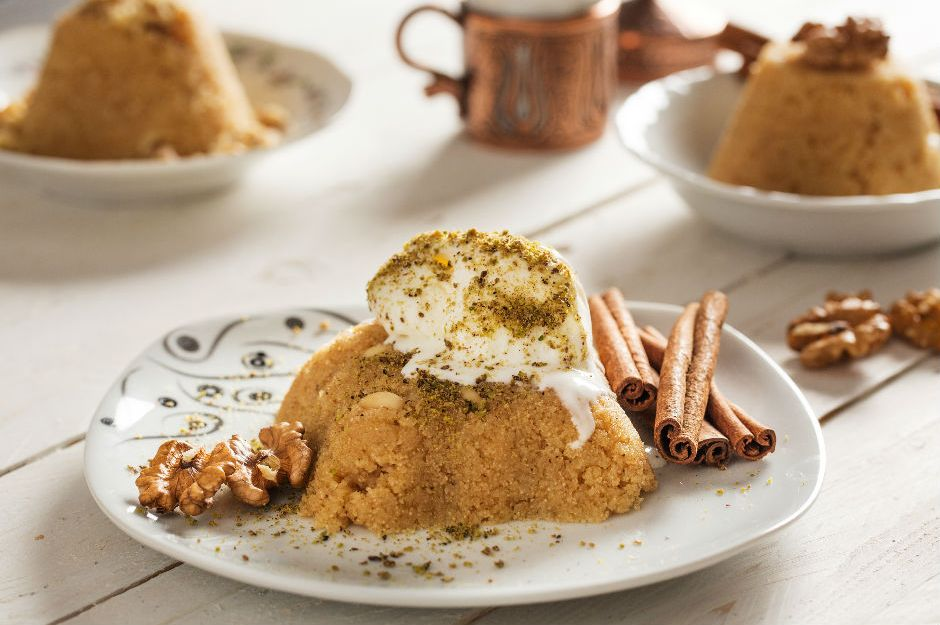

Helva in English Halva is an easy dessert if you are limited in ingredients and don’t have time to make something special for yourself or your friends. Basically, you will need 4 ingredients to make Helva. You need butter, flour, sugar, and water. If you want to enrich your Helva, you can add pine nuts, walnuts, or pistachio to it and top it with cinnamon.
In Turkish cuisine, we have two types of Helva. The first one is Semolina Halva and the other one is Flour Halva. Both of them are usually served at funerals, but they are also known as family gathering desserts. They are the old-school type of desserts that we all love. When we say Helva, we usually mean Semolina Halva.
The word Helva came into Turkish cuisine from Arabic culture after Turks accepted the Islamic way of religious belief. In Arabic culture Hulv word means sweet. This dessert was prepared especially for Ottoman Sultans and their family members; however, on special dates such as Ramadan month, it is distributed to the people who are living nearby Sultan’s palace.
In Turkish culture, Helva dessert widely makes after funerals. When I was a kid, I wanted to learn why we are eating this delicious dessert after funerals and then I asked my grandmother. She told me that it is made to remember how sweet and kind that the deceased person is. At that time, I haven’t got the idea, but now it makes sense to remember your loved one as a kind and sweet person by eating a sweet dessert when they passed away.
If you want to eat this dessert, you can find it mostly at fish restaurants. Kebab restaurants usually offer Künefe dessert and fish restaurants offer Helva dessert. Basically, you need to know where to eat the specific dessert in Turkey.